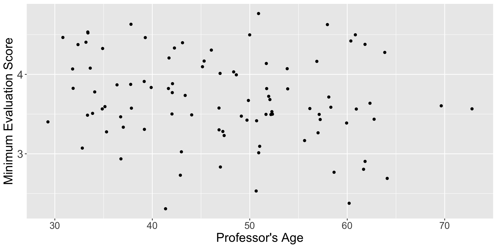
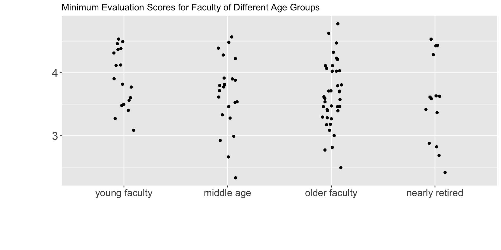
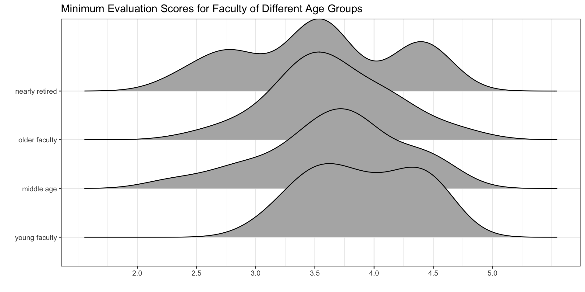
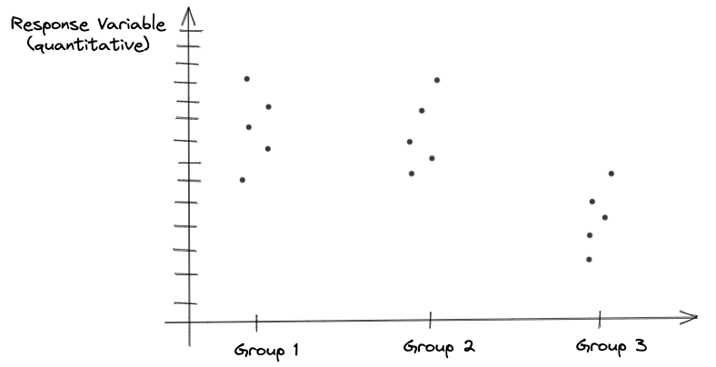
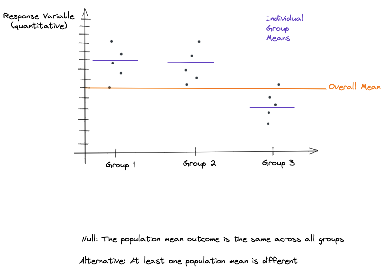
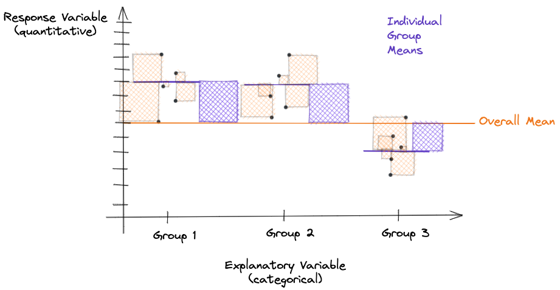
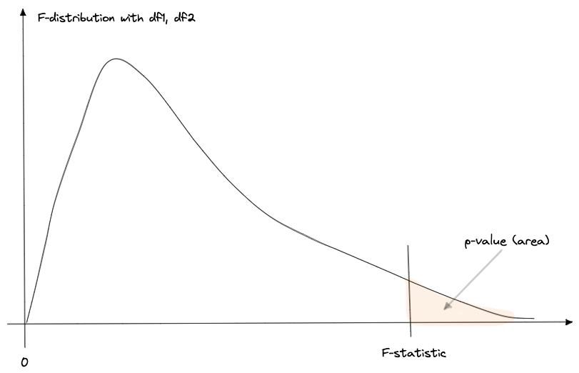
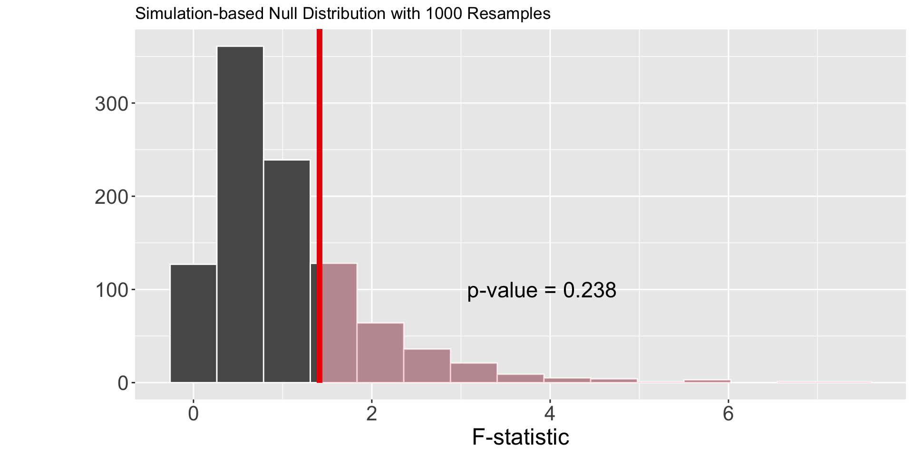

ANalysis Of VAriance
Week 9
Final Project First Draft
Step 1 - Due by Wednesday
- Introduction (Data description, research questions)
. . .
Step 2 - Due by Friday
- Methods (Data visualizations)
- Findings (Data analysis)
. . .
Step 3 - Due by Sunday
- Study Limitations
- Conclusion
One-Way ANOVA
Before…
Now…

Why?
Goal of an ANOVA
Analysis of variance (ANOVA) compares the means of three of more groups to detect if the means of the groups are different.
How???
- Compare how different a group of means are
- Scale the differences relative to the variability of the groups
- Summarize the differences with one number
Visualizations for an ANOVA
Visualizing Group Differences
We want visualizations that allow for us to easily compare:
- the center (mean) of the groups
- the spread (variability) of the groups

. . .
What can you say about the differences between the age groups?
What can you say about the variability within the age groups?
Carrying out an ANOVA
Step 1: Compare your groups

Step 2: Find the overall mean

. . .
This ignores the groups and finds one mean for every observation!
Step 3: Find the group means

Step 4: Calculate the sum of squares

Step 5: Calculate the F-statistic

Step 6: Find the p-value

F-distribution
An \(F\)-distribution is a variant of the \(t\)-distribution, and is also defined by degrees of freedom.
. . .
This distribution is defined by two different degrees of freedom:
- from the numerator (MSG) : \(k - 1\)
- from the denominator (MSE) : \(n - k\)
Two degrees of freedom!
Changing the numerator degrees of freedom

Changing the denominator degrees of freedom

Do you always use an F-distribution to get the p-value?
. . .
NO!
Conditions of an ANOVA
- Independence of observations
Observations are independent within groups and between groups
. . .
- Normality of the residuals
The distribution of residuals for each group is approximately normal
. . .
- Equal variability of the groups
The spread of the distributions are similar across groups
Choosing a Method
Which condition(s) are required to use “theory-based” methods?
Which condition(s) are required to use “simulation-based” methods?

. . .
What do you think?
Simulation-based Methods
Step 1: Calculating the Observed F-statistic
obs_F <- evals_small %>%
specify(response = min_eval,
explanatory = age_cat) %>%
calculate(stat = "F")Response: min_eval (numeric)
Explanatory: age_cat (factor)
# A tibble: 1 × 1
stat
<dbl>
1 1.41Step 2: Simulating what could have happened under \(H_0\)
. . .
How could we use cards to simulate what minimum evaluation score a professor would have gotten, if their score was independent from their age?
Another Permutation Distribution
null_dist <- evals_small %>%
specify(response = min_eval,
explanatory = age_cat) %>%
hypothesize(null = "independence") %>%
generate(reps = 1000, type = "permute") %>%
calculate(stat = "F")Another Permutation Distribution

. . .
Why doesn’t the distribution have negative numbers?
Visualizing the p-value
visualise(null_dist) +
shade_p_value(obs_stat = obs_F,
direction = "greater")Visualizing the p-value

Making a Decision & Reaching a Conclusion
For a p-value of 0.254, what decision would you reach regarding your hypothesis test?
What would you conclude regarding the mean minimum evaluation score for different age groups of faculty?
What if we didn’t believe the normality condition was violated?
Theory-based Methods
aov(min_eval ~ age_cat,
data = evals_small) %>%
tidy()# A tibble: 2 × 6
term df sumsq meansq statistic p.value
<chr> <dbl> <dbl> <dbl> <dbl> <dbl>
1 age_cat 3 1.24 0.414 1.41 0.244
2 Residuals 90 26.4 0.293 NA NA . . .
How was the statistic calculated?
. . .
What distribution was used to calculate the p.value?
. . .
Making a Decision & Reaching a Conclusion
For a p-value of 0.244, what decision would you reach regarding your hypothesis test?
What would you conclude regarding the mean minimum evaluation score for different age groups of faculty?
Did the two methods yield different results?
Final Project Work Session
Introduction & Research Questions
In 4-6 sentences, introduce / describe your data.
- What is the context of the data?
- For what purpose were these data collected?
Outline the two questions your research seeks to address.
- You will have one question for each one-way ANOVA model
- Your question should be in terms of “group means” not “relationships”
Removing / Silencing Code Templates
Your final_project.qmd file contains code templates for evaluating the conditions of your ANOVA model (like you did in Lab 8).
These do not need to be used for your Introduction. So, you need to “turn off” these code chunks to turn in your Introduction!
. . .
There are two ways to do this:
- In the YAML (at the top of your document) add
eval: falseto yourexecuteoptions - In each code chunk (there are two) add
eval: falseto your code chunk options
YAML Option
---
title: "Your Title Goes Here! Make it fun!"
author: "Your Name Here!"
format:
html:
code-tools: true
editor: visual
embed-resources: true
execute:
echo: false
message: false
warning: false
eval: false
---Code Chunk Option
#| label: distribution-of-residuals
#| layout-nrow: 1
#| eval: false
#| echo: fenced
# Residuals of first one-way ANOVA
broom::augment(my_model) %>%
ggplot(mapping = aes(x = .resid)) +
geom_histogram() +
labs(x = "Residual")
# Residuals of second one-way ANOVA
broom::augment(my_model) %>%
ggplot(mapping = aes(x = .resid)) +
geom_histogram() +
labs(x = "Residual")